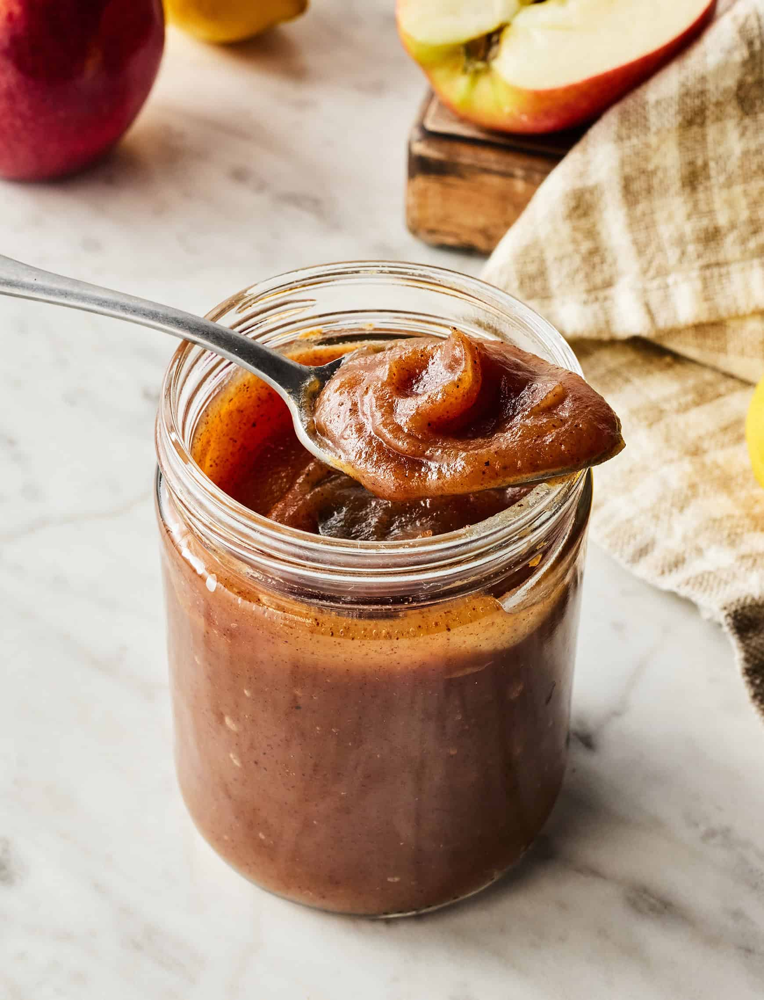

Apple Butter
Return to Home
One of my favorite fall recipes, apple butter. As soon as the leaves start to change color, I am in the kitchen
making this recipe. It is the perfect blend of sweetness and warm-spices.

Ingredients
Main
- 5 to 6 Pounds apples. - A mix of your favorites! I use cosmic crisp and granny smith.
- 1 Cup Apple cider
- 1 Cup Brown sugar, firmly packed
- 3/4 Cup Granulated sugar
Spices - To Taste!
Directions
-
Peel and core the apples. Then Chop them into small pieces.
-
Add chopped apples and cider to a large pot and bring to a simmer over low to medium heat.
-
Stir constantly until most of the moisture has left the apples. You should be able to smash the apples with no
resistance.
-
Using either a blender or a stick blender, turn the soft apples into an apple sauce consistency.
-
Add the pureed apples, the sugars, and the spices back into the pot.
-
Reduce the sauce over low heat for the next several hours, stirring at regular intervals.
-
Once the apples have reduced to a pasty consistency, remove from the head and transfer to a smaller container.
-
Allow the apple butter to cool in the fridge over night. It will thicken as it cools.
- Enjoy on your favorite bread!